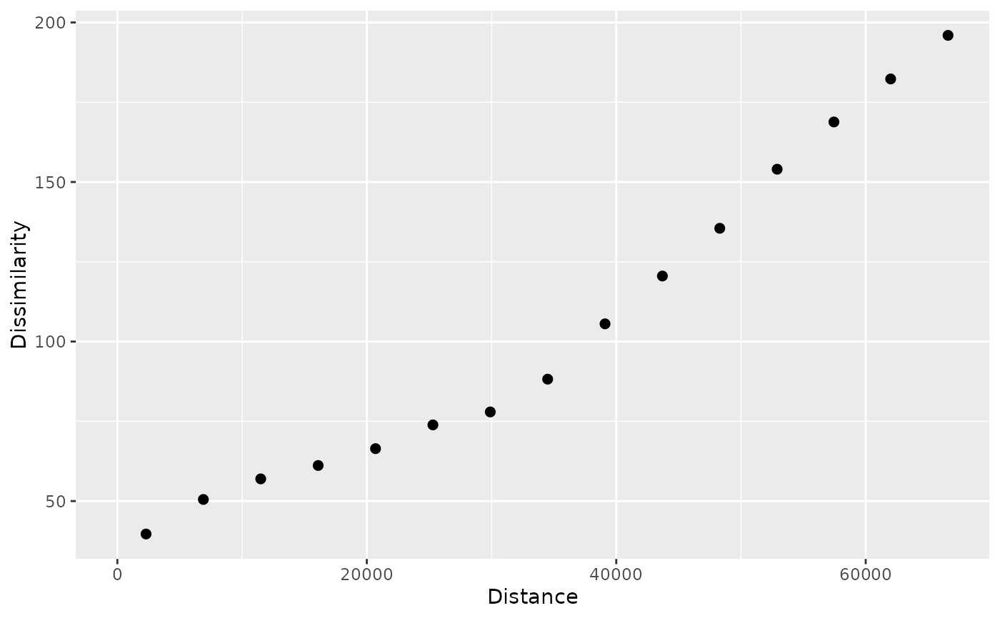

It creates a patternogram or a patternogram cloud. The function takes a raster object of class SpatRaster or a point vector object of class sf as input, and calculates the dissimilarity between values of pairs of points given the distances between them. The output of this function is a tibble of the patternogram class that can be visualized with the plot() and autoplot() functions.
A raster object of class SpatRaster (terra) or a point vector object of class sf (sf)
Spatial distance up to which point pairs are included in patternogram estimates. By default: a square root of the raster/point data area
Either the number of distance intervals (breaks) to be used in calculations, or a numeric vector specifying the break points. If a single number is provided, it specifies the number of intervals, and the function will create equally spaced intervals from 0 to cutoff. By default: 15
Distance measure used. This function uses the philentropy::distance() function (run philentropy::getDistMethods() to find possible distance measures). By default: "euclidean"
Only used when x is raster. Proportion of the cells/points to be used in calculations. Value between 0 and 1. It is also possible to specify an integer larger than 1, in which case the specified number of cells/points will be used in calculations by random sampling. By default: 500
Optional; name of a column in the point attribute table to calculate separate patternograms for different categories or ranges of a numeric variable. If the specified column is numeric, it will be converted to a factor using the base::cut() function. By default: NULL
Logical; if TRUE, return the patternogram cloud
Type of interval to be calculated. Options are "none" (default), "confidence" (confidence intervals around the mean dissimilarity estimate), and "uncertainty" (uncertainty intervals around the dissimilarity estimates). The confidence intervals are calculated using a bootstrap approach, while the uncertainty intervals are calculated using a Monte Carlo approach. Note that uncertainty intervals require more computations than confidence intervals. Also, confidence intervals are only available when cloud = FALSE.
A list of options for interval calculations. Possible options are (a) conf_level: confidence level for intervals (default: 0.95), (b) n_bootstrap: number of bootstrap samples for confidence intervals (default: 100), and (c) n_montecarlo: number of Monte Carlo repetitions for uncertainty intervals (default: 100)
Not used
A tibble of the patternogram class with columns (a) np: the number of point pairs in this estimate, (b) dist: the middle of the distance interval used for each estimate, (c) dissimilarity: the dissimilarity estimate.
Additionally, if interval = "confidence", the tibble contains columns (d) ci_lower: lower confidence interval, and (e) ci_upper: upper confidence interval. If interval = "uncertainty", the tibble contains columns (d) ui_lower: lower uncertainty interval, and (e) ui_upper: upper uncertainty interval.
If group is specified, the tibble also contains a column (f) group: the group category.
Also note, that if interval = "uncertainty", the np is the mean number of point pairs across Monte Carlo repetitions, and the dissimilarity is the mean dissimilarity across Monte Carlo repetitions.
If cloud = TRUE, the outcome is a tibble of the patternogram class with columns (a) left: ID of the first point in the pair, (b) right: ID of the second point in the pair, (c) dist: the spatial distance between the points in the pair, and (d) dissimilarity: the dissimilarity between the values of the points in the pair.
If group is specified, the tibble also contains a column (e) group: the group category.
r = terra::rast(system.file("ex/elev.tif", package = "terra"))
pr = patternogram(r)
pr
#> # A patternogram: 15 × 3
#> np dist dissimilarity
#> * <int> <dbl> <dbl>
#> 1 2849 2300 42.6
#> 2 7666 6895 55.8
#> 3 11304 11495 61.9
#> 4 13128 16100 68.1
#> 5 14286 20700 72.6
#> 6 14278 25300 76.2
#> 7 13004 29900 84.1
#> 8 11814 34500 94.7
#> 9 9987 39100 109.
#> 10 8241 43700 125.
#> 11 6358 48300 140.
#> 12 4610 52900 158.
#> 13 3041 57450 172.
#> 14 2008 62000 184.
#> 15 1257 66600 198.
plot(pr)
